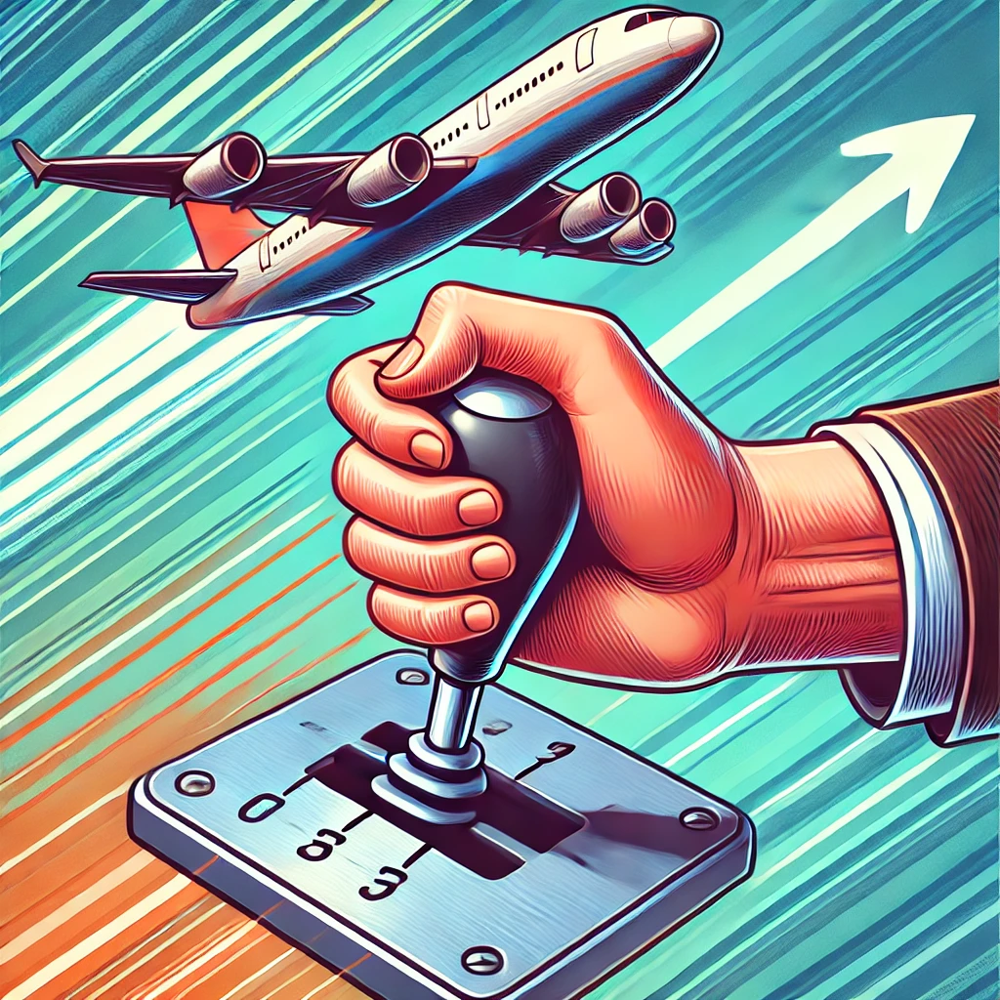

Cambiar de velocidad
¡Hola de nuevo, Piloto en Entrenamiento! Ahora que dominas el vuelo recto y nivelado, y ver rpuntos de referencia es hora de aprender cómo cambiar de velocidad sin perder el control del avión. Cambiar de velocidad en el aire es un poco como cambiar de marcha en un coche: debes hacerlo suavemente para mantener el control y asegurarte de que el avión sigue volando de manera estable.
